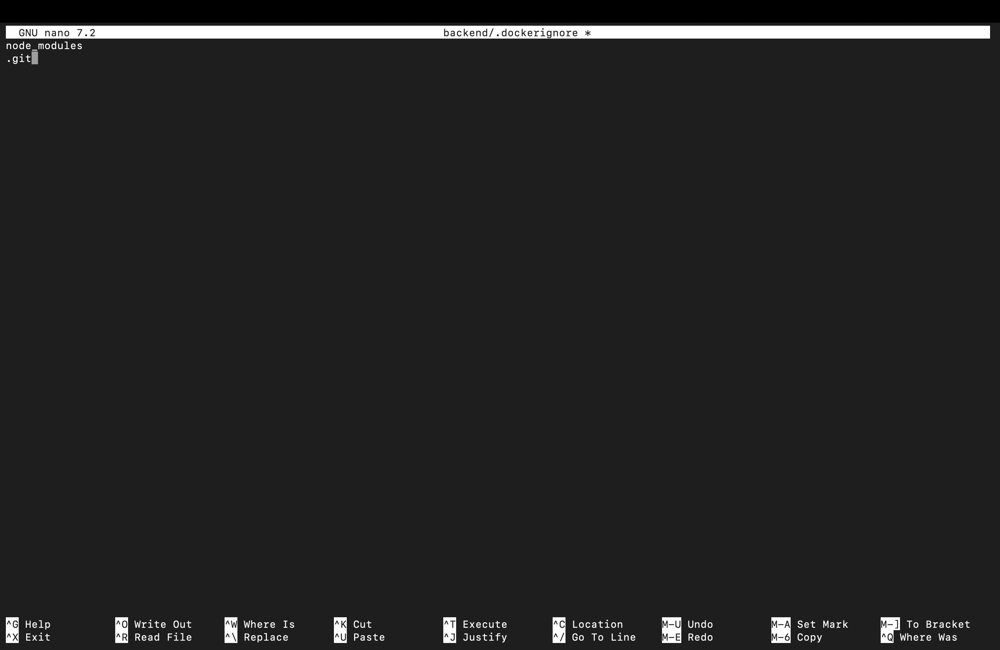
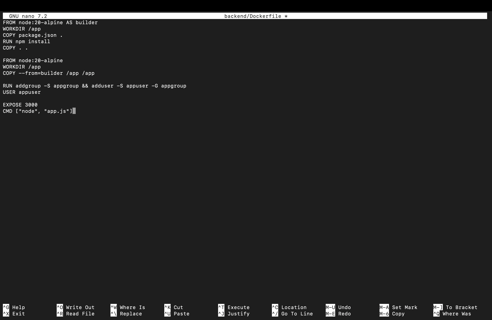

Name: Om Mishra
SAP ID: 500119609
Batch: 4 CCVT
College: UPES Dehradun
📌 Project Components
- Backend: Node.js + Express
- Database: PostgreSQL
- Containerization: Docker
- Orchestration: Docker Compose
- Networking: Macvlan
Commands Used
docker compose up -d --build
docker ps
docker network inspect mynet
Input
POST /users
{
"name": "Omi"
}
Output
{"status":"OK"}
{"id":1,"name":"Omi"}
Screenshots

